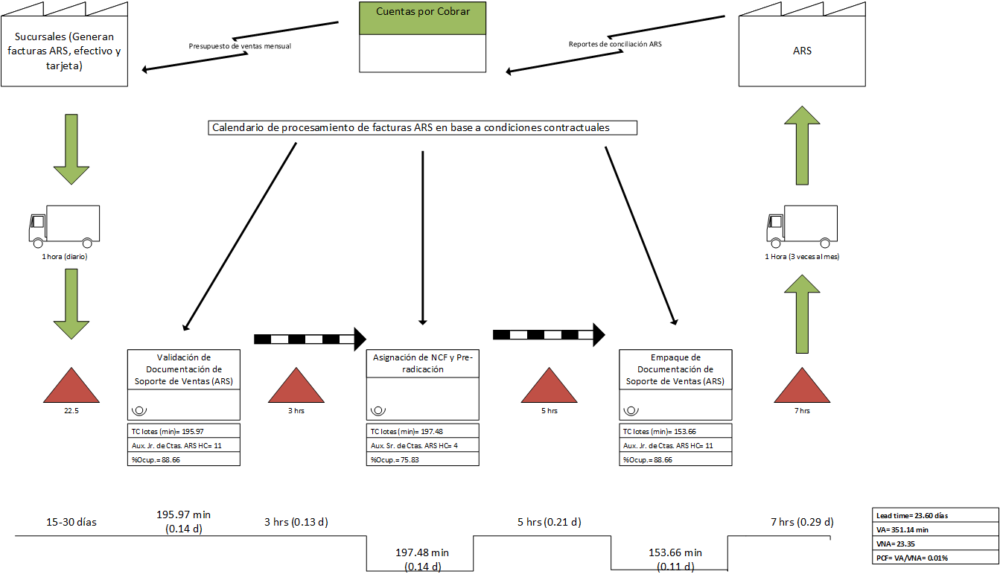

Se observan facturas de ARS con fechas de más de 3 semanas de antigüedad durante el proceso de desglose y conciliación. Esto representa un riesgo para la operatividad, ya que el tiempo máximo permitido por la ARS en cuestión, para anular autorizaciones con errores es de 72 horas. Siendo el propósito del proceso de desglose y conciliación identificar errores en montos en las transacciones de las sucursales, ya para la fecha en las que son identificados los errores, en muchos casos no es posible evitar la glosa o devolución.
